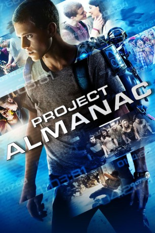
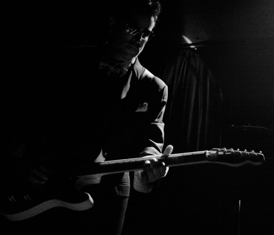
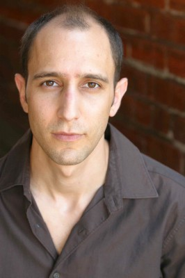

#1167 Project Almanac
 
 IMDB-Wertung: 6.4 / 10
IMDB-Wertung: 6.4 / 10  Metascore: 47
Metascore: 47 
Die Freunde David und Quinn werden an ihrer Highschool von den anderen nur als Nerds belächelt. Da gelingt ihnen das Kunststück, den Prototypen einer Zeitmaschine zum Laufen zu bringen. Dank passend getimter Zeitreisen werden sie zu Stars auf jeder Party, bestehen ihre Prüfungen spielend und gewinnen im Lotto. Doch als David wegen seiner heimlichen Liebe einen Alleingang wagt, droht das Zeitgefüge irreparable Schäden zu nehmen. Blockbuster-Garant Michael Bay ("Transformers") schickt als Produzent ein junges, aufstrebendes Team vor (u.a. Johnny Weston, Sofia Black-D'Elia) und hinter der Kamera (Regisseur Dean Israelite) durch Zeit und Raum. Eine wilde Achterbahnfahrt durch Vergangenheit und Zukunft.
Jahr: 2014
Dauer: 106 Minuten
FSK: 6
Land: USA Studio: Paramount PicturesTonspuren: DD5.1 - ,
Untertitel: Deutsch,
Auflösung: 1080p (1920x800) Größe: 7823 MB
Genre: Drama, Mystery, Sci-Fi, Thriller
Regisseur: Dean Israelite
Drehbuch: Jason Pagan, Andrew Deutschman
Soundtrack:
Darsteller:
- Jonny Weston als David Raskin
- Sofia Black-D'Elia als Jessie Pierce
 Sam Lerner als Quinn Goldberg
Sam Lerner als Quinn Goldberg- Allen Evangelista als Adam Le
 Virginia Gardner als Christina Raskin
Virginia Gardner als Christina Raskin Amy Landecker als Kathy Raskin
Amy Landecker als Kathy Raskin Gary Weeks als Ben Raskin
Gary Weeks als Ben Raskin- Macsen Lintz als David, Age 7
 Gary Grubbs als Dr. Lou
Gary Grubbs als Dr. Lou- Michelle DeFraites als Sarah Nathan
- Katie Garfield als Liv
- Patrick Johnson als Todd
- Joshua Brady als Break Up Guy
-  Mychael Bates als Car Salesman
- Onira Tares als Lotto Woman
- Mani Yarosh als Ingrid
-  Andrew Benator als Ace Hardward Employee
- Aaron Marcus als History Teacher
- André Nemec als Newscaster
 Anthony Reynolds als Policeman
Anthony Reynolds als Policeman- Daniel Platzman als Imagine Dragons
- Wayne Sermon als Imagine Dragons
- Brett David Stelter als Basketball Coach
 Frederick Carpenter als Police Officer , uncredited
Frederick Carpenter als Police Officer , uncredited- Orel De La Mota als Male Student , uncredited
- Gabriela Fraile als Bikini Girl , uncredited
- Cameron Fuller als Justin's Best Friend , uncredited
 Fred Galle als Music Industry Mogul , uncredited
Fred Galle als Music Industry Mogul , uncredited Jeff Glover als Maserati Salesman , uncredited
Jeff Glover als Maserati Salesman , uncredited- Adam C. Johnson als Student , uncredited
- Jesse Kindred als Music Partier , uncredited
- Levi Krevinghaus als Stoner #1 , uncredited
- Cody Mason als High School Student , uncredited
- Agnes Mayasari als Bikini Girl , uncredited
- Ann McCaskey als Bikini Girl , uncredited
- Xander Merciers als Hippie Partier , uncredited
- Dennis Roach als Festival Balloon Artist , uncredited
- Elle Roberts als Jessie's Friend , uncredited
- Rashia Whitlock als Spankx Girl , uncredited
- Curry Stone als Male Student
- Jamila Thompson als Marina
- Hillary Harley als Blonde
- Courtney Bowers als Jess' Friend
- Danielle Rizzo als Break Up Girl
- Ben McKee als Imagine Dragons
- Dan Reynolds als Imagine Dragons
- Taylor Hogan als Sarah's Friend
- Elijah Iniekpo als Student / Baseball Player
- Sydney Isaac als Track Girl
- Scott Ledbetter als Detective
Datei: X:\2014(N-Z)\Project Almanac (2014, FSK6, 1920x800).mkv seit 29.05.2015
Festplatte: HD 2013(I-Z)-2014(A-Z)
 Es gibt insgesamt 163 Filme in der Gruppe '2014(N-Z)'
Es gibt insgesamt 163 Filme in der Gruppe '2014(N-Z)'